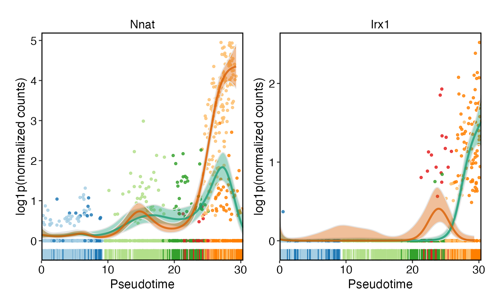

Calculates dynamic features for lineages in a single-cell RNA-seq dataset.
RunDynamicFeatures(
srt,
lineages,
features = NULL,
suffix = lineages,
n_candidates = 1000,
minfreq = 5,
family = NULL,
slot = "counts",
assay = NULL,
libsize = NULL,
BPPARAM = BiocParallel::bpparam(),
seed = 11
)Arguments
- srt
A Seurat object.
- lineages
A character vector specifying the lineage names for which dynamic features should be calculated.
- features
A character vector specifying the features (genes or metadata variables) for which dynamic features should be calculated. If NULL, n_candidates must be provided.
- suffix
A character vector specifying the suffix to append to the output slot names for each lineage. Defaults to the lineage names.
- n_candidates
An integer specifying the number of candidate features to select when features is NULL. Defaults to 1000.
- minfreq
An integer specifying the minimum frequency threshold for candidate features. Features with a frequency less than minfreq will be excluded. Defaults to 5.
- family
A character or character vector specifying the family of distributions to use for the generalized additive models (GAMs). If family is set to NULL, the appropriate family will be automatically determined based on the data. If length(family) is 1, the same family will be used for all features. Otherwise, family must have the same length as features.
- slot
A character vector specifying the slot in the Seurat object to use. Default is "counts".
- assay
A character vector specifying the assay in the Seurat object to use. Default is NULL.
- libsize
A numeric or numeric vector specifying the library size correction factors for each cell. If NULL, the library size correction factors will be calculated based on the expression matrix. If length(libsize) is 1, the same value will be used for all cells. Otherwise, libsize must have the same length as the number of cells in srt. Defaults to NULL.
- BPPARAM
A BiocParallelParam object specifying the parallelization parameters for computing dynamic features. Defaults to BiocParallel::bpparam().
- seed
An integer specifying the seed for random number generation. Defaults to 11.
Value
Returns the modified Seurat object with the calculated dynamic features stored in the tools slot.
Examples
data("pancreas_sub")
pancreas_sub <- RunSlingshot(pancreas_sub, group.by = "SubCellType", reduction = "UMAP")
#> Warning: No shared levels found between `names(values)` of the manual scale and the data's fill values.
#> Warning: No shared levels found between `names(values)` of the manual scale and the data's fill values.
#> Warning: Removed 8 rows containing missing values or values outside the scale range (`geom_path()`).
#> Warning: Removed 8 rows containing missing values or values outside the scale range (`geom_path()`).
pancreas_sub <- RunDynamicFeatures(pancreas_sub, lineages = c("Lineage1", "Lineage2"), n_candidates = 200)
#> [2024-11-18 15:37:18.008986] Start RunDynamicFeatures
#> Workers: 10
#> Number of candidate features(union): 225
#> Calculate dynamic features for Lineage1...
#>
|
| | 0%
|
|=========== | 10%
|
|====================== | 20%
|
|================================== | 31%
|
|============================================= | 41%
|
|======================================================== | 51%
|
|=================================================================== | 61%
|
|=============================================================================== | 72%
|
|========================================================================================== | 82%
|
|=================================================================================================== | 90%
|
|==============================================================================================================| 100%
#>
#> Calculate dynamic features for Lineage2...
#>
|
| | 0%
|
|=========== | 10%
|
|====================== | 20%
|
|================================== | 31%
|
|============================================= | 41%
|
|======================================================== | 51%
|
|=================================================================== | 61%
|
|=============================================================================== | 72%
|
|======================================================================================== | 80%
|
|=================================================================================================== | 90%
|
|==============================================================================================================| 100%
#>
#> [2024-11-18 15:37:23.004836] RunDynamicFeatures done
#> Elapsed time:5 secs
names(pancreas_sub@tools$DynamicFeatures_Lineage1)
#> [1] "DynamicFeatures" "raw_matrix" "fitted_matrix" "upr_matrix" "lwr_matrix" "libsize"
#> [7] "lineages" "family"
head(pancreas_sub@tools$DynamicFeatures_Lineage1$DynamicFeatures)
#> features exp_ncells r.sq dev.expl peaktime valleytime pvalue padjust
#> Gcg Gcg 187 0.46558408 0.8691199 30.14982 24.1770635 0 0
#> Iapp Iapp 334 0.40340355 0.7935267 30.14982 0.2290477 0 0
#> Pyy Pyy 478 0.45596618 0.7388775 27.49359 15.9875973 0 0
#> Ppy Ppy 88 0.10955800 0.6091774 30.14982 9.5550973 0 0
#> Gast Gast 111 0.05913062 0.6073736 29.50492 10.7007739 0 0
#> Chgb Chgb 346 0.40337800 0.7620184 23.04453 11.4826570 0 0
ht <- DynamicHeatmap(
srt = pancreas_sub,
lineages = c("Lineage1", "Lineage2"),
cell_annotation = "SubCellType",
n_split = 6, reverse_ht = "Lineage1"
)
#> 169 features from Lineage1,Lineage2 passed the threshold (exp_ncells>20 & r.sq>0.2 & dev.expl>0.2 & padjust<0.05):
#> Gcg,Iapp,Pyy,Chgb,Slc38a5,Rbp4,Lrpprc,Cck,2810417H13Rik,Chga...
#>
#> The size of the heatmap is fixed because certain elements are not scalable.
#> The width and height of the heatmap are determined by the size of the current viewport.
#> If you want to have more control over the size, you can manually set the parameters 'width' and 'height'.
ht$plot
 DynamicPlot(
srt = pancreas_sub,
lineages = c("Lineage1", "Lineage2"),
features = c("Nnat", "Irx1"),
group.by = "SubCellType",
compare_lineages = TRUE,
compare_features = FALSE
)
#> Warning: No shared levels found between `names(values)` of the manual scale and the data's fill values.
#> Warning: No shared levels found between `names(values)` of the manual scale and the data's fill values.
#> Warning: No shared levels found between `names(values)` of the manual scale and the data's fill values.
DynamicPlot(
srt = pancreas_sub,
lineages = c("Lineage1", "Lineage2"),
features = c("Nnat", "Irx1"),
group.by = "SubCellType",
compare_lineages = TRUE,
compare_features = FALSE
)
#> Warning: No shared levels found between `names(values)` of the manual scale and the data's fill values.
#> Warning: No shared levels found between `names(values)` of the manual scale and the data's fill values.
#> Warning: No shared levels found between `names(values)` of the manual scale and the data's fill values.
